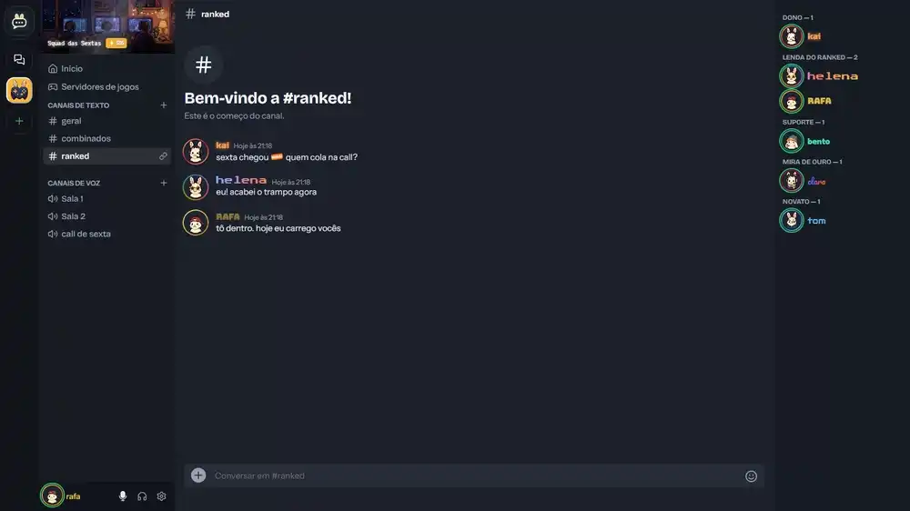
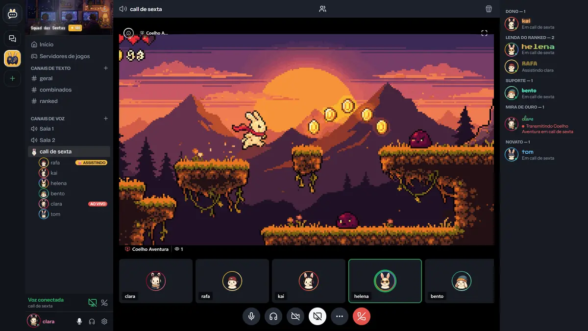
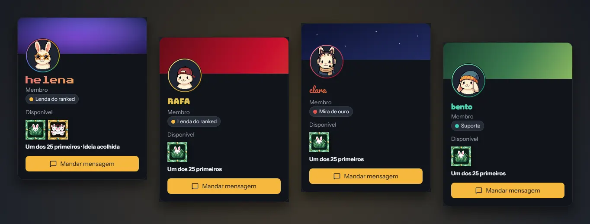
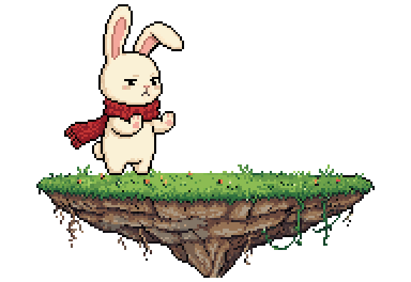

Seu cantinho na net.
Um quarto que é seu, a sua turma por perto e a call a um clique. Voz, vídeo, tela e chat, tudo junto.
Roda no navegador, sem instalar nada. No Windows, o app ainda leva o som do PC pra tela compartilhada.


Comunidades
Um lugar com a cara do seu grupo
Canais, emojis e sons do próprio pessoal, cargos e um selo pra turma vestir. Só entra quem foi convidado.

Call e chat
Ninguém precisa ligar pra ninguém
Viu a turma na call? É só entrar. Sem barulho de fundo, e a internet ruim de um não derruba ninguém.
- Tela compartilhada com o som do jogo
- Assistir junto, com o chat do lado
- Clipe dos últimos 30 segundos
- Karaokê com a letra no tempo certo
- Mini-games na call, pra jogar com a turma
- DM e amigos, fora das comunidades

Customização
Enfeite que ninguém compra
Nome, moldura, fundo e insígnias do seu jeito. Tudo de graça: nada tá à venda.


Valeu por passar por aqui
O Syden fala 72 idiomas e já abre no do seu navegador. Troca quando quiser: vale pro app e pro site.